Borderlands Terrain Assets — Pass 01
Vegetation, land textures, and coastal cliffs only. Runtime-sized PNGs shown over representative backgrounds.
Composite preview
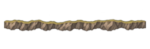
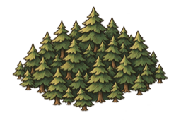
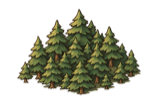
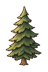
Vegetation
pine-single-01 · 48×72
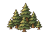
pine-cluster-small-01 · 96×72
forest-cluster-medium-01 · 160×106
forest-cluster-large-01 · 256×170
Land textures
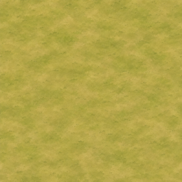
meadow-01 · 256×256
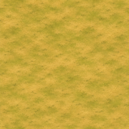
dry-grass-01 · 256×256
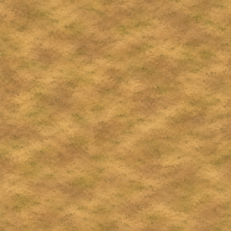
bare-earth-01 · 256×256
Narrow coastline edge overlays
cliff-edge-straight-01 · 256×85
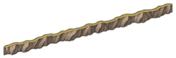
cliff-edge-diagonal-up-01 · 256×85
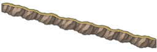
cliff-edge-diagonal-down-01 · 256×85
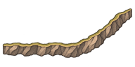
cliff-edge-convex-01 · 192×96
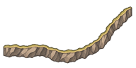
cliff-edge-concave-01 · 192×96
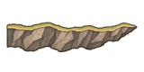
cliff-edge-endcap-right-01 · 160×80
Standalone headlands and outcrops
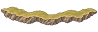
cliff-straight-01 · 192×64
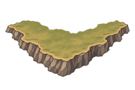
cliff-outer-corner-01 · 192×128
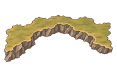
cliff-inlet-corner-01 · 192×128
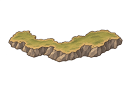
cliff-outcrop-01 · 192×128